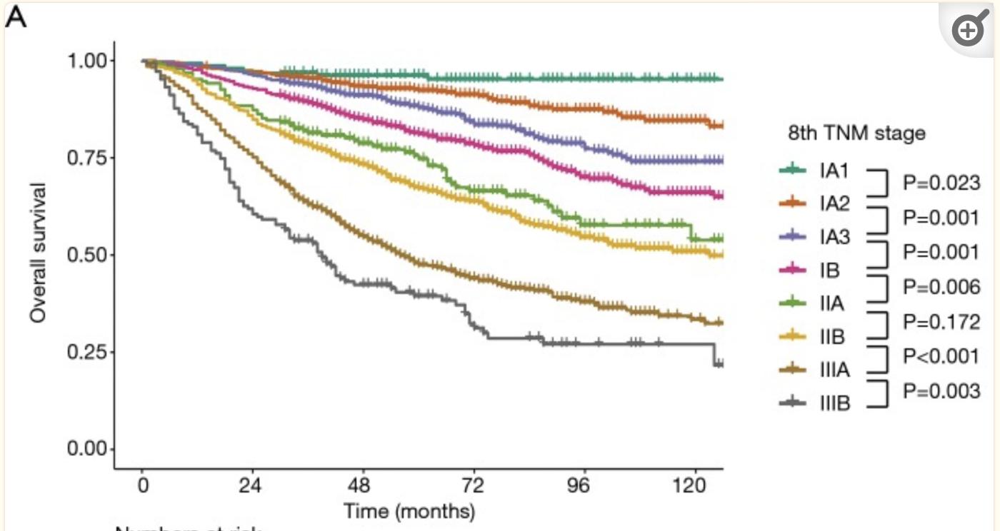

1 Introduction to biological and biomedical data
Last updated: 04 Sep, 2024 08:51 PM EDT
History
Biological data, in particular agricutural data, lay at the root of much of statistics and probability development in the 1800s and 1900s. In fact, biological understanding and statistical methodology have had a symbiotic relationship through the ages. Our understanding of genetic inheritance is basically statistical, and the field of design of experiments evolved to help make sense of whether particular seeds were better than other seeds. In more modern times, as biological methods and understanding have progressed, so have statistical methods to help understand the biology. Modern medicine also has benefitted from statistical advances, primarily in evaluating the safety and efficacy of drugs, devices and treatments addressing common and uncommon diseases, led by the efforts at the US Food and Drug Administration in the 1950s. The last century also saw massive statistical advances in understanding factors that affect the risk of disease and how to use high-throughput technologies to quickly evaluate huge numbers of molecular-level factors robustly, and identify anomalies in imaging modalities. The last 50 years especially have been a period of rapid change and improvement, but also a re-evaluation of how to best understand the biology from the data, and how to make decisions based on such data.
Biology
Statistics has long had an influence in our understanding of biology. It has been central to the development of pest-resistant strains of grains, breeding of elite thoroughbred horses and productive livestock. As we’ll see in the next section, much of this is based on our understanding of genetic inheritance. It also benefitted from the development of more efficient experimental designs so that we could efficiently identify whether some characteristics improved or not. The field of design of experiments developed with agricultural experiments (famously, R.A. Fisher’s work at the Rothamsted Experimental Station in England, and P. Mahalonobis’ work with jute production in India). These developments then gave rise to study designs to efficiently investigate human disease (including work by Jerry Cornfield at the NIH), and the use of the randomized controlled trial (RCT) as the study design providing rigorous evidence of causality and effectiveness of drugs and the basis for almost all drug approvals worldwide.
Much of the work in agriculture, biology and epidemiology translated into engineering and business quite quickly.
- The ideas of experimental design and statistical quality control were used by Deming to improve industrial quality, mainly in Japan after his ideas were rejected by the American auto industry. This line of thought has extended and developed today into the Six Sigma principles and methods of quality assurance
- Experimental design is central to engineering progress and standardization
- The ideas of A/B testing in business are basically in silico versions of RCTs. Over the last 20 years, RCTs have become an accepted and central methodology in economics research
Genetics
Classical genetics
Our understanding of genetic inheritance is based in the foundational experiments of Gregor Mendel, who showed in small agricultural experiments how particular traits in pea plants are transmitted from generation to generation. The basic ideas of autosomal inheritance and how many of each trait to expect in each generation were established by statistical analyses, even though Mendel’s experiments and theory pertained to a simplistic view of biology. This work was further extended and applied to many other fields by greats like R.A. Fisher and J.B.S. Haldane.
There has been controversy that Mendel’s data was too good, and may have had an element of fabrication. Karl Pearson and R. A. Fisher both contributed statistical analyses to promote this, one of the first instances of statistical forensics. We’ll see another more modern example later. More information about the controversy around Mendel’s data can be learned here.
The basic ideas started by Mendel was extended over time as our understanding of the complexities of genetic inheritance improved. We started understanding how inheritance worked biologically through mitosis and meiosis, and the role that distance between genes plays in inheritance (genetic linkage). This understanding led to understanding that Mendel’s laws of independent assortment have major exceptions, in that genes that are close together in the genome don’t get inherited independently. This understanding also led to the design of linkage studies and linkage analysis to understand inheritable diseases like some cancers, diabetes and heart disease. This also led to a focus on studying families, siblings, and family trees to understand genetic factors of disease, and novel experimental designs for genetic association studies.
Perhaps the most famous example of linkage analysis is in the prevalence of hemophilia among the royal families of Europe in the 1800s and 1900s; famously the hemophilia of the Russian Tsarevich Alexei and the rise of Rasputin entered Western culture through novels and movies.

We’ve already mentioned two stalwarts formative to the modern methodology and practice of statistics, R. A. Fisher and Karl Pearson, who were academic and professional rivals. Today, there is an strong realization that despite their seminal methodological contributions, their intentions were not ethical by today’s standards. In particular, both were proponents of eugenics (see Eugenics and Scientific Racism for an introduction), which was not uncommon in the early 1900s. Pearson, who developed the formalization of the correlation coefficient and the \(\chi^2\) test, and his mentor Francis Galton (who promoted the idea of “regression to the mean”) were avowed eugenicists; Pearson founded the journals Biometrika (which is still a prestigious journal) and the Annals of Eugenics, which transformed later to the Annals of Human Genetics, and was appointed the first Galton Chair of Eugenics at the University of London.
Fisher was also interested in eugenics as it related to Mendelian inheritance (see here), and did progress from those ideas to develop the statistical basis for genetic inheritance. However, he did both talk and publish pro-eugenics views, and has led many instructors to stop using Fisher’s iris data as a basic dataset for teaching statistics; it led to the rise of the penguins.
Genomics
A fundamental shift in biological technology arose in the 1990s with various high-throughput methods, with accompanying statistical methods. Foremost was the idea of a microarray, where we could interrogate multiple genes together across multiple samples. These were pioneered by Patrick Brown (Brown and Botstein (1999)) at Stanford University, and led to multiple advances in statistical methodology in the early 2000s at Stanford (Rob Tibshirani, Michael Eisen, David Botstein and others) and later at Johns Hopkins (Rafael Irizarry, among others). In particular, two seminal papers (Eisen et al. (1998) and Tusher, Tibshirani, and Chu (2001)) demonstrated the new statistical methodology needed to address the (then) new technology of cDNA microarrays and introduced unsupervised learning as a major data science methodology in biology. Later, we saw more detailed statistical analyses around quality assurance, normalization and proper statistical analyses of microarrays (Irizarry et al. (2003)).
One of the early successes of microarray technology was in the subtyping of breast cancer (Sørlie et al. (2001)), which showed that breast cancer was not a homogeneous disease but had several distinct subtypes. This led, over the years, to a standard genetic panel that all breast cancer biopsies are subject to, looking at mutations in the estrogen receptor (ER), progesterone receptor (PR) and the HER2 gene. These now lead to 4 broad classes of breast cancer, each of which requires different treatment regimes. In particular the success of tamoxifen for ER+ cancer and heceptin for HER2+ cancer have made a majority of breast cancer treatable.
More information: Breast cancer types: What your type means
Other “-omics”
In the last 30 years, we have seen the growth of other high-throughput methods to look at a number of molecular properties, most prominently being proteomics, metabolomics, and transcriptomics. Sequencing of genes, i.e. learning the exact alphabet of the genome, become cheaper and more accurate due in part to efforts of scientists in the Human Genome Project, and today, next-generation sequencing (NGS) is widespread.
Statistically, this lead to the development of genome-wide association studies (GWAS), which incorporated high-throughput genetic seqencing and SNP analysis to try and understand the genetic basis of disease. Polygenic risk scores arising from high-throughput technologies have helped us understand how multiple genes can act together to increase the risk of disease. This led to several advances in understanding disease and potential treatment strategies.
Today, our understanding of disease risk, disease etiology and the development of drug targets leverage high-throughput technologies, machine learning and artificial intelligence to develop new drugs, especially in oncology.
Software
This period was the beginning of the areas of bioinformatics and computational biology, and germinated the growth of software, primarily in , to address such problems in a collective known as the Bioconductor project. This suite of software has become the industry standard for bioinformatic analysis and has made the main analytic software used in this field.
Looking forward
We will learn more about bioinformatics and making inferences and identifying biomarkers in Chapter 7 and Chapter 8
Understanding human disease
Collecting data
The earliest form of data-driven inference for human disease was based on observational data, i.e. data that was collected as it appeared and not as part of any organized structure or design. Observational data can be powerful in first showing associations between disease and causes and are often the first indications that something is going wrong. We have seen in DSAN 5300 the work of John Snow in identifying water wells that might have been responsible for a cholera outbreak in London in 1854.

Epidemiologists and biostatisticians like Jerome Cornfield started looking more carefully at study design, mainly in the context of smoking and lung cancer. The case-control design developed as a faster way of evaluating associations between disease and some factor.
Howevever, observational studies cannot evaluate causation or establish a link between a factor and the development of a disease. This needs longitudinal cohort studies or randomized experiments, which became the gold standards for understanding disease, and in establishing interventions to prevent or cure disease.
Looking forward
We’ll discuss more about study design, levels of evidence and causality in Chapter 2, Chapter 3, and Chapter 4. We’ll explore principles for planning studies in Chapter 10
How long do we live?
Survival curves for overall survival in non-small cell lung cancer by the 8th edition of the TNM staging system (Yun et al. (2019))
A central question in understanding disease is, how long do we live, and will a treatment let us live longer? This is a question of survival, and an entire ecosystem of methods and software developed to address this question. You have been introduced to the Kaplan-Meier curve and Cox regression, which are widely used, but are the tip of the iceberg.
Cox regression, especially, has been used within the context of RCTs to establish that individuals who get a new treatment live longer (have lower risk of dying) than individuals who were given a placebo or a current standard of care treatment. It established the role of the hazard ratio as the crucial statistic to look at. The prominence of this method (which is about the same age as myself, Cox (1972), but whose bona fide as a good method for survival analysis was established a few years later. This is one of the most cited papers in all of statistics)
The central question in survival analysis is how do we handle incomplete information of a particular form. Everyone will eventually die, but since we cannot have infinite studies, we cannot observed all the deaths or when they happened. We also sometimes cannot observe the beginning of when someone was first exposed (to a carcinogen like asbestos, for example). All we know is that death occurred after some last observation time, or exposure happened before some first observation time. How do we account for this in our analyses?
- Why is accounting for this incomplete information important?
- What happens if we just ask, what fraction has survived 2 years, say? Is this more straightforward?
- What assumptions do we need to make to establish that a new treatment is indeed better than an old treatment? Or that a new treatment is no worse than an old treatment?
Looking foward
We will explore survival analysis and how it is used for assessing treatments in Chapter 5 and Chapter 6.
Imaging as a source of biomarkers and evidence

Medical images are an essential piece of the diagnostic puzzle, be it x-rays, computerized tomography (CT), magnetic resonance images (MRI) or positron-emission tomography (PET). The rise of computational radiology and computational pathology have made the assessement of diagnostic medical images much easier, leveraging many machine learning techniques as well as domain knowledge. This area is getting stronger with the advance of computational tools, especially using deep learning tools.
Looking forward
We will not explore this area much in this course.
Electronic health records as a source of data
Electronic health records (EHR) have allowed the standardization and inter-operability of personal health records within and between healthcare organizations. They provide a textual and multimodal record of a patient’s journey. As such, they can be analyzed using a variety of NLP techniques, and there is current interest in using large language models to provide predictions and reasoning for patient outcomes using EHRs
Looking forward
We will defer these topics to the more specialized courses that include NLP and LLMs
The rest of the course
Once we understand the kinds of data and their particular characteristics that we can encounter in biological and biomedical areas, we will explore other methodologies that can help understand the inter-relationships between different factors, how modeling can help our understanding , and how we can predict outcomes. In particular, we will explore Bayesian models and reasoning, and how machine learning models can provide a more flexible method for looking at associations and causality. We will explore questions around explainable AI, and how all of this can help with making decisions around biological and clinical understanding and treatment choices.